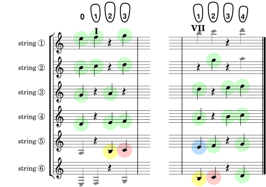

Your last note to learn here is the lowly B (in yellow), but it's important in the way it leads melodies back to the root (in red).
Scale 9. Bringing the thirds home.
Scale 10. Same for the low major and diminished triads.
The boxes below automatically keep track of which exercises you've seen in this group (you get a gold star for each exercise you visit). And clicking on a box will take you to that exercise (you can see the exercise number by hovering over a box and looking at the url displayed). So all this lets you pick up where you left off in your last session, or go on to some random exercise you haven't seen yet. Courtesy of your browser history.